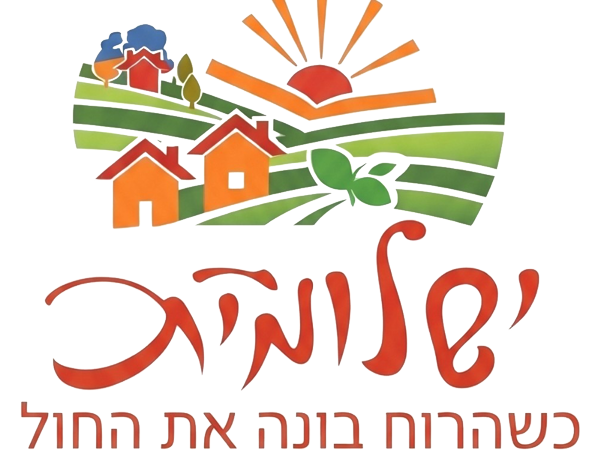

<!doctype html>
<html lang="he" dir="rtl">
<head>
<meta charset="utf-8">
<meta name="viewport" content="width=device-width, initial-scale=1, viewport-fit=cover">
<title>שומרי התחנה · שלומית</title>
<meta name="description" content="שיבוץ ודיווח של הורים מתנדבים בתחנת ההסעות של שלומית, כל בוקר 7:20–7:40">
<meta name="theme-color" content="#F6B33A">
<link rel="icon" href="assets/logo.png">
<link rel="preconnect" href="https://fonts.googleapis.com">
<link rel="preconnect" href="https://fonts.gstatic.com" crossorigin>
<link href="https://fonts.googleapis.com/css2?family=Assistant:wght@400;600;700;800&family=Karantina:wght@400;700&display=swap" rel="stylesheet">
<link rel="stylesheet" href="css/style.css">
<!-- מונה כניסות (GoatCounter) -->
<script>(function(){if(/^(localhost|127.|192.168.)/.test(location.hostname))return;var s=document.createElement('script');s.async=true;s.src='//gc.zgo.at/count.js';s.setAttribute('data-goatcounter','https://siporeysaba.goatcounter.com/count');s.onload=function(){try{window.goatcounter.count({path:'site-shlomit-hasaot',title:'שומרי התחנה',event:true})}catch(e){}};document.head.appendChild(s)})();</script>
</head>
<body>
<div class="shell">
  <aside class="rail">
    <a href="#/" class="brand" aria-label="שומרי התחנה – דף הבית">
      
      <span class="brand-name">שומרי התחנה</span>
      <span class="brand-sub">כל בוקר · <span dir="ltr">7:20–7:40</span></span>
    </a>
    <nav class="nav" aria-label="ניווט ראשי">
      <a href="#/" data-route="home"><span class="nav-ico" aria-hidden="true">◐</span>השבוע</a>
      <a href="#/schedule" data-route="schedule"><span class="nav-ico" aria-hidden="true">▤</span>לוח ודיווח</a>
      <a href="#/admin" data-route="admin"><span class="nav-ico" aria-hidden="true">⚙</span>ניהול</a>
    </nav>
    <svg class="hills" viewBox="0 0 300 160" preserveAspectRatio="none" aria-hidden="true">
      <path d="M0 70 C80 40 170 40 300 60 L300 160 L0 160Z" fill="#8CC63F"/>
      <path d="M0 92 C90 66 190 70 300 88 L300 160 L0 160Z" fill="#fff"/>
      <path d="M0 100 C90 76 190 80 300 96 L300 160 L0 160Z" fill="#3E8E3A"/>
      <path d="M0 124 C100 102 200 106 300 120 L300 160 L0 160Z" fill="#fff"/>
      <path d="M0 132 C100 110 200 114 300 128 L300 160 L0 160Z" fill="#8CC63F"/>
    </svg>
  </aside>
  <main id="view" class="view" tabindex="-1"></main>
</div>

<dialog id="sheet" class="sheet"></dialog>
<div id="toast" class="toast" role="status" aria-live="polite"></div>

<script type="module" src="js/app.js"></script>
</body>
</html>
